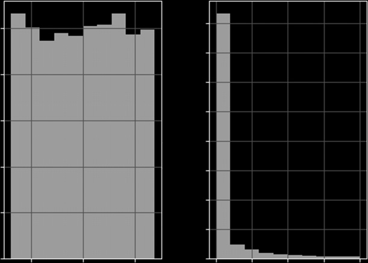
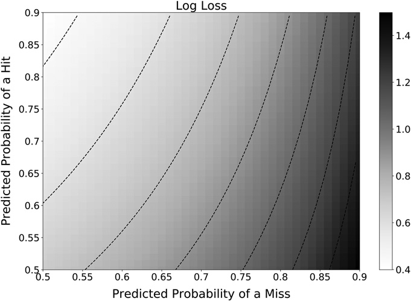

第二部分：建模
超参数调优与交叉验证
9.1 动机
超参数调优是拟合 ML 算法的关键步骤。若操作不当，算法极易过拟合，实盘表现将令人失望。ML 领域的文献尤其强调对所有调优后的超参数进行交叉验证。正如第7章所示，金融领域的交叉验证（CV）是一个极具挑战性的问题，其他领域的解决方案往往难以奏效。本章将探讨如何使用清除式 k 折 CV 方法调优超参数。参考文献部分列举了若干提出替代方法的研究，这些方法在特定问题中可能具有参考价值。
9.2 网格搜索交叉验证
网格搜索交叉验证通过穷举搜索，根据用户定义的评分函数，找出使 CV 性能最优的参数组合。当我们对数据的底层结构了解不多时，这是一种合理的首选方法。Scikit-learn 已在函数 GridSearchCV中实现了该逻辑，该函数接受一个 CV 生成器作为参数。出于第7章所述的原因，我们需要传入我们的 PurgedKFold 类（代码段 7.3），以防止 GridSearchCV 使 ML 估计器对泄漏信息产生过拟合。
def clfHyperFit(feat,lbl,t1,pipe_clf,param_grid,cv=3,bagging=[0,None,1.],
n_jobs=-1,pctEmbargo=0,**fit_params):
if set(lbl.values)=={0,1}:scoring='f1' # f1 for meta-labeling
else:scoring='neg_log_loss' # symmetric towards all cases
#1) hyperparameter search, on train data
inner_cv=PurgedKFold(n_splits=cv,t1=t1,pctEmbargo=pctEmbargo) # purged
gs=GridSearchCV(estimator=pipe_clf,param_grid=param_grid,
scoring=scoring,cv=inner_cv,n_jobs=n_jobs,iid=False)
gs=gs.fit(feat,lbl,**fit_params).best_estimator_ # pipeline
#2) fit validated model on the entirety of the data
if bagging[1]>0:
gs=BaggingClassifier(base_estimator=MyPipeline(gs.steps),
n_estimators=int(bagging[0]),max_samples=float(bagging[1]),
max_features=float(bagging[2]),n_jobs=n_jobs)
gs=gs.fit(feat,lbl,sample_weight=fit_params \
[gs.base_estimator.steps[-1][0]+'__sample_weight'])
gs=Pipeline([('bag',gs)])
return gs代码段 9.1 列出了函数 clfHyperFit，该函数实现了清除式 GridSearchCV。参数 fit_params 可用于传入 sample_weight，且 param_grid 包含将被组合成网格的参数值。此外，该函数还支持对调优后的估计器进行 bagging 集成。正如第6章所述，对估计器进行 bagging 通常是个好主意，上述函数已内置了相应的逻辑。
建议使用 scoring='f1' 用于元标签化（meta-labeling）应用场景，原因如下。假设样本中存在大量负例（即，标签为'0'）。一个将所有样本都预测为负例的分类器将获得较高的 'accuracy' 或 'neg_log_loss'，尽管该模型并未从特征中学到如何区分不同类别。事实上，这类模型的召回率为零，准确率无意义（详见第3章第3.7节）。 'f1' 评分通过以准确率和召回率来评估分类器，从而修正了这种性能虚高问题（详见第14章第14.8节）。
对于其他（非元标签化）应用场景，使用 'accuracy' 或 'neg_log_loss'是完全可行的，因为我们对预测所有情形同等重视。请注意，对样本重新标签化不会影响 'accuracy' 或 'neg_log_loss'，但会对 'f1'.
这个示例很好地揭示了 sklearn的 Pipeline 的一个局限性：其 fit 方法不接受 sample_weight 参数，而是期望一个 fit_params 关键字参数。这是一个已在 GitHub 中报告的缺陷；但由于涉及大量功能的重写与测试，修复可能需要一些时间。在此之前，欢迎使用代码段 9.2 中的变通方案。
代码段 9.2 创建了一个新类，名为 MyPipeline，它继承了 sklearn的 Pipeline的所有方法。它用一个新方法覆盖了继承的 fit 方法，使其能够处理参数 sample_weight，之后再重定向至父类。
class MyPipeline(Pipeline):
def fit(self,X,y,sample_weight=None,**fit_params):
if sample_weight is not None:
fit_params[self.steps[-1][0]+'__sample_weight']=sample_weight
return super(MyPipeline,self).fit(X,y,**fit_params)如果您不熟悉这种扩展类的技术，可以阅读以下 Stack Overflow 入门帖子： http://stackoverflow.com/questions/576169/understanding-python-super-with-init-methods.
9.3 随机搜索交叉验证
对于参数数量较多的 ML 算法，网格搜索交叉验证（CV）在计算上将变得不可行。此时，一种具有良好统计性质的替代方案是从分布中对每个参数进行采样（Bergstra et al. [2011, 2012]）。这有两个优势：第一，无论问题维度如何，我们都可以控制搜索的组合数量（相当于设定计算预算）；第二，对性能影响相对较小的参数不会像网格搜索 CV 那样大幅增加搜索时间。
无需为配合 RandomizedSearchCV而编写新函数，让我们直接扩展代码段 9.1，加入实现该目的的选项。一种可能的实现方案见代码段 9.3。
def clfHyperFit(feat,lbl,t1,pipe_clf,param_grid,cv=3,bagging=[0,None,1.],
rndSearchIter=0,n_jobs=-1,pctEmbargo=0,**fit_params):
if set(lbl.values)=={0,1}:scoring='f1' # f1 for meta-labeling
else:scoring='neg_log_loss' # symmetric towards all cases
#1) hyperparameter search, on train data
inner_cv=PurgedKFold(n_splits=cv,t1=t1,pctEmbargo=pctEmbargo) # purged
if rndSearchIter==0:
gs=GridSearchCV(estimator=pipe_clf,param_grid=param_grid,
scoring=scoring,cv=inner_cv,n_jobs=n_jobs,iid=False)
else:
gs=RandomizedSearchCV(estimator=pipe_clf,param_distributions= \
param_grid,scoring=scoring,cv=inner_cv,n_jobs=n_jobs,
iid=False,n_iter=rndSearchIter)
gs=gs.fit(feat,lbl,**fit_params).best_estimator_ # pipeline
#2) fit validated model on the entirety of the data
if bagging[1]>0:
gs=BaggingClassifier(base_estimator=MyPipeline(gs.steps),
n_estimators=int(bagging[0]),max_samples=float(bagging[1]),
max_features=float(bagging[2]),n_jobs=n_jobs)
gs=gs.fit(feat,lbl,sample_weight=fit_params \
[gs.base_estimator.steps[-1][0]+'__sample_weight'])
gs=Pipeline([('bag',gs)])
return gs9.3.1 对数均匀分布
某些 ML 算法通常只接受非负超参数，这在一些非常常用的参数中十分典型，例如 \(C\) 在 SVC 分类器中，以及 \(\gamma\) 在 RBF 核函数中。1 我们可以从有界于 0 到某个较大值（比如 100）的均匀分布中抽取随机数。这意味着 99% 的值预计都会大于 1。对于响应函数非线性的参数，这并不一定是探索可行域的最有效方式。例如，某个 SVC 对 \(C\) 从 0.01 增加到 1 的响应，可能与对 \(C\) 从 1 增加到 100 的响应同样灵敏。2 因此，从 \(C\) 某个 \(U[0,100]\) 分布中抽样效率较低。在这类情形下，从一个对数均匀分布中抽取值似乎更为有效——即抽取值的对数服从均匀分布。我将其称为对数均匀分布，由于在文献中未能找到相关定义，在此予以正式界定。
随机变量 \(x\) 在 \(a>0\) 的均值， \(b>a\) 之间服从对数均匀分布，当且仅当 \(\log[x]\sim U[\log[a],\log[b]]\)。该分布具有如下 CDF：
由此可推导出 PDF：
注意，CDF 与对数的底数无关，因为
对任意底数 \(c\)均成立，因此该随机变量不是 \(c\)的函数。代码片段 9.4 在 scipy.stats 中实现（并测试）了一个随机变量，其中 \([a,b]=[1E-3,1E3]\)，因此 \(\log[x]\sim U[\log[1E-3],\log[1E3]]\)。图 9.1 展示了样本在对数尺度下的均匀性。
1 http://scikit-learn.org/stable/modules/metrics.html.
2 http://scikit-learn.org/stable/auto_examples/svm/plot_rbf_parameters.html.

import numpy as np,pandas as pd,matplotlib.pyplot as mpl
from scipy.stats import rv_continuous,kstest
#---------------------------------------
class logUniform_gen(rv_continuous):
# random numbers log-uniformly distributed between 1 and e
def _cdf(self,x):
return np.log(x/self.a)/np.log(self.b/self.a)
def logUniform(a=1,b=np.exp(1)):return logUniform_gen(a=a,b=b,name='logUniform')
#---------------------------------------
a,b,size=1E-3,1E3,10000
vals=logUniform(a=a,b=b).rvs(size=size)
print kstest(rvs=np.log(vals),cdf='uniform',args=(np.log(a),np.log(b/a)),N=size)
print pd.Series(vals).describe()
mpl.subplot(121)
pd.Series(np.log(vals)).hist()
mpl.subplot(122)
pd.Series(vals).hist()
mpl.show()9.4 评分与超参数调优
代码片段 9.1 和 9.3 设置了 scoring='f1' 用于元标签化（meta-labeling）应用。对于其他应用，它们设置的是 scoring='neg_log_loss' 而非标准的 scoring='accuracy'。尽管准确率具有更直观的解释，我建议使用 neg_log_loss 在为投资策略调整超参数时。下面我来阐述其中的原因。
假设你的 ML 投资策略以较高概率预测你应买入某证券。你将根据策略的置信度建立较大的多头仓位。若预测有误，市场反而下跌，你将蒙受巨大损失。然而，准确率对"高概率下的错误买入预测"与"低概率下的错误买入预测"一视同仁。此外，准确率还可以用低概率下的命中来抵消高概率下的失误。
投资策略的盈利依赖于以高置信度预测出正确标签。低置信度下正确预测所带来的收益，不足以弥补高置信度下错误预测所造成的损失。因此，准确率无法真实反映分类器的性能。相比之下，对数损失（log loss）3 （又称交叉熵损失）计算的是给定真实标签时分类器的对数似然值，从而将预测概率纳入考量。对数损失的估计公式如下：
3 http://scikit-learn.org/stable/modules/model_evaluation.html#log-loss.
其中
- \(p_{n,k}\) 是与预测 \(n\) 对应标签的概率 \(k\).
- \(Y\) 是一个 1-of-\(K\) 二值指示矩阵，满足 \(y_{n,k}=1\) 当观测值 \(n\) 被分配标签 \(k\) 属于 \(K\) 所有可能标签之一时取 1，否则取 0。
假设分类器预测两个 1，而真实标签分别为 1 和 0。第一个预测命中，第二个预测失误，因此准确率为 50%。图 9.2 展示了当上述预测来自不同概率范围时的交叉熵损失 \([0.5,0.9]\)。可以观察到，在图的右侧，由于高概率下的失误，对数损失较大，尽管在所有情形下准确率均为 50%。
偏好交叉熵损失而非准确率还有第二个原因。CV 通过应用样本权重（见第7章第7.5节）对分类器进行评分。如第4章所述，观测权重由观测的绝对收益决定。这意味着样本加权交叉熵损失以参与 PnL（按市值计价的盈亏）计算的变量来估计分类器的性能：它以正确标签作为交易方向，以概率作为仓位规模，以样本权重作为观测的收益/结果。这才是金融应用超参数调优的正确 ML 性能指标，而非准确率。

当我们将对数损失用作评分统计量时，通常倾向于改变其符号，因此将其称为 neg_log_loss。做出这一改变的原因是出于直觉上的美观：负对数损失值越高越好，与准确率相同。请注意这个 sklearn 当您使用时存在的缺陷 neg_log_loss: https://github.com/scikit-learn/scikit-learn/issues/9144。为规避此缺陷，您应使用 cvScore 第7章中介绍的函数。
参考文献
- Bergstra, J., R. Bardenet, Y. Bengio, and B. Kegl (2011): “Algorithms for hyper-parameter optimization.” Advances in Neural Information Processing Systems, pp. 2546–2554.
- Bergstra, J. and Y. Bengio (2012): “Random search for hyper-parameter optimization.” Journal of Machine Learning Research, Vol. 13, pp. 281–305.
参考书目
- Chapelle, O., V. Vapnik, O. Bousquet, and S. Mukherjee (2002): “Choosing multiple parameters for support vector machines.” Machine Learning, Vol. 46, pp. 131–159.
- Chuong, B., C. Foo, and A. Ng (2008): “Efficient multiple hyperparameter learning for log-linear models.” Advances in Neural Information Processing Systems, Vol. 20. Available at http://ai.stanford.edu/~chuongdo/papers/learn_reg.pdf.
- Gorissen, D., K. Crombecq, I. Couckuyt, P. Demeester, and T. Dhaene (2010): “A surrogate modeling and adaptive sampling toolbox for computer based design.” Journal of Machine Learning Research, Vol. 11, pp. 2051–2055.
- Hsu, C., C. Chang, and C. Lin (2010): “A practical guide to support vector classification.” Technical report, National Taiwan University.
- Hutter, F., H. Hoos, and K. Leyton-Brown (2011): “Sequential model-based optimization for general algorithm configuration.” Proceedings of the 5th international conference on Learning and Intelligent Optimization, pp. 507–523.
- Larsen, J., L. Hansen, C. Svarer, and M. Ohlsson (1996): “Design and regularization of neural networks: The optimal use of a validation set.” Proceedings of the 1996 IEEE Signal Processing Society Workshop.
- Maclaurin, D., D. Duvenaud, and R. Adams (2015): “Gradient-based hyperparameter optimization through reversible learning.” Working paper. Available at https://arxiv.org/abs/1502.03492.
- Martinez-Cantin, R. (2014): “BayesOpt: A Bayesian optimization library for nonlinear optimization, experimental design and bandits.” Journal of Machine Learning Research, Vol. 15, pp. 3915– 3919.